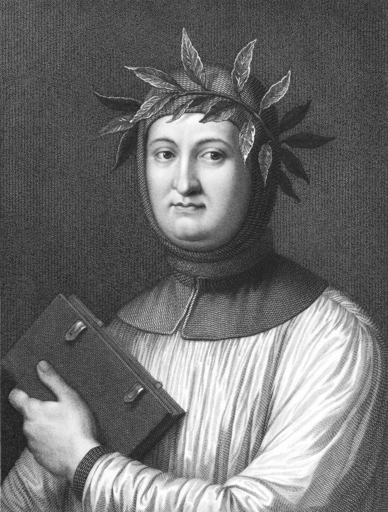

What Started the Renaissance?
There are various theories that have been argued that surround how the period of the Renaissance started, but most commonly stated was because of the new sources of knowledge preserved in ancient Greek and Roman texts, alongside the social, political and technological developments in Europe. Namely, it was said that the term “revival” came from the revival of human potential and classical learning instead of medieval scholasticism. This period was expressed earliest through the rise of interest in humanism, an intellectual movement that centered attention towards humanity and human experiences (Britannica Editors, n.d.). An Italian poet and scholar, Francesco Petrarch, was the one who rediscovered a compilation of these ancient texts (e.g. Cicero’s Letters) containing different concepts of humanism. Later on, the development of papermaking and the printing press made by Johannes Gutenburg, paved the way for more widespread and accessible information around Europe. This helped produce media and more copies of books or texts by ink through mechanized printing. Compared to handmade works, the printing press greatly increased the number of physical books produced with reduced and more affordable costs.
What is the Renaissance?
The Renaissance, otherwise known as the period of “Rebirth” followed the Middle Ages and began within the Major City-State of Florence in Italy during the 14th century before spreading all around Europe and roughly ending until the 16th century. It was a period marked by the emphasis on the advancements of art, sciences and philosophy. Unlike the medieval period, where it was largely centered on scholasticism and religion, individuals started to move away from religious reasoning and worldview and moved towards the ideals of humanism, individual achievements, and more evidence-based thought processes. Because of this, artists and scholars began to take inspiration from translated ancient Greek and Roman texts, which shows significance and contribution towards its progress in expression and learning. This shift encouraged the methods of observation, experimentation, critical thinking and helped more people to challenge the current traditional beliefs in their time. In art, prominent figures such as Leonardo da Vinci and Michelangelo were influences for the mastery of realism, proportion, and perspective. Overall, the Renaissance was a turning point in Europe’s history that reshaped and challenged medieval beliefs through the mix of classical knowledge and innovative ideas.
What made Renaissance art thrive?
Besides humanism, one of the sharpest forms the Renaissance was represented was through Art and its developments over time. Emerging in the city-state Florence, The Medici Family was a powerful banking dynasty that oversaught the rise of intellectual and artistic development of the Italian Renaissance. A prominent figure within the Medicis, such as Cosimo, gave patronage towards the arts and supported artists such as Fra Angelico, Fra Filippo Lippi, Donatello, Leonardo da Vinci, and Michelangelo. The Medici family used commissions not just for supporting the artists but also for their recognition and influence while also setting their name into Florence’s artistic golden age. Their patronage provided artists with resources to continue creating and experimenting with different styles and themes of art.
Over time, artists introduced new and different techniques that incorporated mathematical principles into their compositions that slowly developed methods and common details seen in Renaissance art like perspective, proportion, and color schemes alongside the themes of religion, naturalism and portraits that were able to reshape art’s history. Because of the investments of the Medicis in art, they were able to set Florence as one of the centers of Renaissance art and reflected their embrace of humanist ideals and intellectual progress.